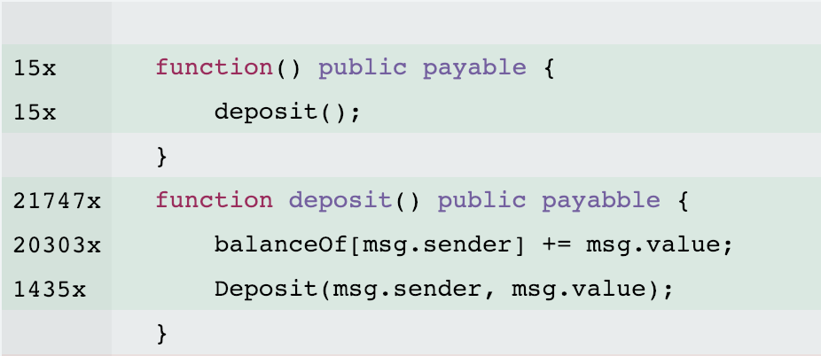

<!doctype html>
<html lang="en">
  <head>
    <meta charset="utf-8">

    <title>Virtual Machines</title>

    <meta name="author" content="Doug Hoyte">

    <meta name="apple-mobile-web-app-capable" content="yes" />
    <meta name="apple-mobile-web-app-status-bar-style" content="black-translucent" />

    <meta name="viewport" content="width=device-width, initial-scale=1.0, maximum-scale=1.0, user-scalable=no, minimal-ui">

    <link rel="stylesheet" href="../reveal.js/css/reveal.css">
    <link rel="stylesheet" href="../reveal.js/css/theme/black.css" id="theme">

    <!-- Code syntax highlighting -->
    <link rel="stylesheet" href="../reveal.js/lib/css/zenburn.css">

    <!-- Printing and PDF exports -->
    <script>
      var link = document.createElement( 'link' );
      link.rel = 'stylesheet';
      link.type = 'text/css';
      link.href = window.location.search.match( /print-pdf/gi ) ? '../reveal.js/css/print/pdf.css' : '../reveal.js/css/print/paper.css';
      document.getElementsByTagName( 'head' )[0].appendChild( link );
    </script>

    <!--[if lt IE 9]>
    <script src="../reveal.js/lib/js/html5shiv.js"></script>
    <![endif]-->

    <style>
      .reveal .slides h1, .reveal .slides h2, .reveal .slides h3 {
        text-transform: none;
      }

      .two-column {
        display: flex;
        flex-wrap: wrap;
      }

      .two-column em {
        margin: 20px;
      }

      .reveal .big-and-bold {
        font-weight: bold;
        font-size: 135%;
      }

      .reveal .shrunk-a-bit {
        font-size: 90%;
      }

      .reveal .shrunk-a-bit pre {
        width: 100%;
      }

      .reveal pre {
        width: 100%;
      }

      .reveal .highlight {
        color: yellow;
        font-weight: bold;
      }

      .reveal .highlightRed {
        color: red;
        font-weight: bold;
      }

      .reveal .highlightGreen {
        color: green;
        font-weight: bold;
      }

      .left {
        left:-8.33%;
        text-align: left;
        float: left;
        width:50%;
        z-index:-10;
      }

      .right {
        left:31.25%;
        top: 75px;
        text-align: left;
        float: right;
        z-index:-10;
        width:50%;
      }

      table {
        font-size: 80%;
      }
    </style>
  </head>

  <body>
    <div class="reveal">
      <div class="slides">

<!------------------------------------------------------->


<section data-markdown><script type="text/template">

## Virtual Machines

### Lesson 2: Gas Optimization

*Doug Hoyte, March 2020*

[https://is.gd/blockchainvm](https://is.gd/blockchainvm)

</script></section>


<section data-markdown><script type="text/template">

## Lesson Topics

* Performance and efficiency
* Gas metering
* Optimization strategies

</script></section>


<section data-markdown><script type="text/template">

## Trade-offs

* To improve performance in one area we almost always need to sacrifice another
  * Make it run faster, but it will use more memory
  * Save some memory, but it will run slower
  * No hiring an expensive designer, but it will look ugly
* "No such thing as a free lunch"

</script></section>


<section data-markdown><script type="text/template">

## Performance

* Performance can have many meanings:
  * Lower latency
  * Higher bandwidth
  * Cheaper
  * Less power
  * Less bandwidth
  * Nicer looking
  * Higher profit margins

</script></section>


<section data-markdown><script type="text/template">

## Performance trade-offs

* Sometimes performance does not matter
  * Who cares if a nightly reporting job takes 10 minutes instead of 10 seconds?
* Whenever you discuss "performance" you need to specify how you are measuring performance
  * Often many performance dimensions don't matter

</script></section>


<section data-markdown><script type="text/template">

## Efficiency

* Efficiency is about using resources intelligently
* It is special performance metric because
  * Efficiency **always** matters
* Using resources efficiently is a moral imperative
  * Resources are scarce, and can be used elsewhere for productive work
  * Climate change

</script></section>


<section data-markdown><script type="text/template">

## Blockchain Resources

* **Bandwidth**: Transactions and blocks need to be sent across the network between every full node
* **CPU**: Every transaction needs to be validated by every full node
* **Storage**: At least the current blockchain state needs to be stored by every full node

</script></section>


<section data-markdown><script type="text/template">

## Bitcoin fees

* In Bitcoin, you choose how much to pay to the miner who includes your transaction as a *fee*
* The fee is the difference between the sum of your input UTXOs and the sum of your outputs

</script></section>


<section data-markdown><script type="text/template">

## Sats/Byte

* Since bitcoin block size is the limiting factor when creating a block, most miners order transactions by fee divided by transaction size
* Satoshis per byte
  * Satoshi is a 100 millionth of a Bitcoin (smallest possible unit)
  * Higher sats/byte you pay, faster your transaction is mined

</script></section>


<section data-markdown><script type="text/template">

## Bitcoin Fee Market


</script></section>


<section data-markdown><script type="text/template">

## Time-value of money

* A fee is a one-time payment, but the transaction can require storage on the blockchain forever
* Shouldn't the fee be infinitely large?
  * Time-value of money: Money now is worth more than money later
  * In an efficient market, the interest earned on the fee is equal to the cost of storage
  * So, a transaction fee is thus the present-value of a perpetual annuity
  * See also: discounted cash flow

</script></section>


<section data-markdown><script type="text/template">

## TX Mining Externality

* The miner who solves the block gets the entire fee payment
* But the additional bandwith, processing, and storage is paid by everyone who runs a full node

</script></section>


<section data-markdown><script type="text/template">

## Stateless clients

* Research is being done for new blockchain protocols where validators and miners don't need to store the entire blockchain state
* Nodes ("clients") don't need large amounts of storage ("stateless")
* Transactions need to include witness data

</script></section>


<section data-markdown><script type="text/template">

## Turing incomplete

* In Bitcoin, the size of a transaction in bytes is a good enough estimate of how many resources it will consume
  * Bitcoin script is turing incomplete:
  * No loops are possible, so can always be executed in time proportional to the length

</script></section>


<section data-markdown><script type="text/template">

## Turing complete

* Ethereum EVM is "turing complete" (informal):
  * Supports loops, and arbitrarily complex logic
  * A transaction could loop forever
  * It could consume a very large amount of resources relative to its size
    * Consider writing to storage inside a loop

</script></section>


<section data-markdown><script type="text/template">

## 15 minute break

</script></section>


<section data-markdown><script type="text/template">

## Gas

* Ethereum allows contracts to be "turing complete" by recording the resources consumed during each operation
  * Resources are recorded in units of "gas" (gasoline/petrol used in cars)
* If resource usage exceeds a limit, the transaction is aborted

</script></section>


<section data-markdown><script type="text/template">

## Optimizer Runs


* There are two dimensions to optimize for:
  * Cost to deploy
  * Cost to use
* Runs parameter allows you to choose
  * `1` = optimize for cheap deployment
  * `200+` = optimize for often used contract

</script></section>


<section data-markdown><script type="text/template">

## Initialization

Instead of this:

    contract MyContract {
        uint256 myVar = 0;
    }

Do this:

    contract MyContract {
        uint256 myVar;
    }

* Storage variables are initialized to `0` anyway

</script></section>


<section data-markdown><script type="text/template">

## Gas estimates

* The solidity compiler can compute estimates about how much gas a contract will take to deploy
* And can estimate how much to call a function
  * **Worst case** estimates. For things like loops it will report *infinite*
  * These are estimates because they can depend on chain state at time of deploy
  * Also can depend on things like number of 0 bytes in parameters

</script></section>


<section data-markdown><script type="text/template">

## Construction cost, uninitialized

    contract MyContract {
        uint256 myVar;
    }

Gives this estimate:

    "Creation": {
        "codeDepositCost": "12600",
        "executionCost": "66",
        "totalCost": "12666"
    }

</script></section>


<section data-markdown><script type="text/template">

## Construction cost, initialized

    contract MyContract {
        uint256 myVar = 0;
    }

Gives this estimate:

    "Creation": {
        "codeDepositCost": "12600",
        "executionCost": "5072",
        "totalCost": "17672"
    }

</script></section>


<section data-markdown><script type="text/template">

## Why so expensive?

* Because the constructor code of the contract explicitly writes `0` to storage
* It uses an `SSTORE` opcode to do this, which costs 5,000 gas
  * It would cost 20,000 gas if you set it to non-zero value

</script></section>


<section data-markdown><script type="text/template">

## Net metering for SSTORE

* After the Istanbul fork, writing multiple times to the same storage is cheaper

      IERC20Token(token).transfer(guy1, amount);
      IERC20Token(token).transfer(guy2, amount);

* Before Istanbul you would pay 5,000 gas (at least) for each update to your balance in the token contract
* But now you only pay for one update
  * Take advantage of this

</script></section>


<section data-markdown><script type="text/template">

## Constructor Assembly

    contract MyContract {
        uint256 myVar = 0xABCD;
        uint256 myVar2 = 0xFEED;
    }

Compiles to:

    PUSH ABCD
    PUSH 0        <-- slot 0 in storage
    SSTORE
    PUSH FEED
    PUSH 1        <-- slot 1 in storage
    SSTORE

</script></section>


<section data-markdown><script type="text/template">

## Exercise 1

* Create a simple contract in [Remix](https://remix.ethereum.org/) that initializes a variable:
      contract MyContract {
          uint256 myVar = 0xABCD;
      }
* Compile it, and click on **Compilation Details** in the Compile tab
  * Find the construction gas estimate
  * Find the assembly for the constructor

</script></section>


<section data-markdown><script type="text/template">

## Read the assembly

Consider this loop:

    uint256 i = 10;
    while (i > 0) {
        i--;
    }

Old compilers compiled this literally:

      PUSH 0
      DUP2
      GT
      ISZERO
      PUSH [tag] 8
      JUMPI

</script></section>


<section data-markdown><script type="text/template">

## Read the assembly, 2

But there are no negative *unsigned* ints, so this was better:

    uint256 i = 10;
    while (i != 0) {
        i--;
    }

Results in:

      DUP1
      ISZERO
      PUSH [tag] 8
      JUMPI

* Latest solidity compiler does this for you now

</script></section>


<section data-markdown><script type="text/template">

## external vs. public

* Use `external` when possible
  * Since `external` functions can only be called from the outside, we can assume arguments are in calldata
  * `public` functions must support both, so it has to copy arguments to memory

</script></section>


<section data-markdown><script type="text/template">

## Avoid repetitive checks

The following redundantly double-checks the balance is sufficient:

    require(balance >= amount);
    balance = balance.sub(amount);

* You can save a bit of gas by removing the `require`
  * Discuss: Is this optimization worth it?

</script></section>


<section data-markdown><script type="text/template">

## Minimize storage writes

      struct Record {
          uint64 timestamp; // slot
          uint256 userId;   // slot
          uint64 nonce;     // slot
      }

Sometimes the compiler can merge storage writes into a single `SSTORE` if you **pack** your structs:

      struct Record {
          uint256 userId;    // slot
          uint64 timestamp;  // <--| merged into single
          uint64 nonce;      //    | storage slot
      }

* 64 bits is plenty for timestamps and counters

</script></section>


<section data-markdown><script type="text/template">

## Short circuiting Or

Bad:

    if (expensiveCondition() || commonCondition()) { ... }

Good:

    if (commonCondition() || expensiveCondition()) { ... }

* If `commonCondition()` is true, then `rareCondition()` isn't evaluated
  * It's "short-circuited"

</script></section>


<section data-markdown><script type="text/template">

## Short circuiting Or example

Bad:

    if (hasAdminPrivileges(msg.sender) || !contractLocked) { ... }

Good:

    if (!contractLocked || hasAdminPrivileges(msg.sender)) { ... }

* Most of the time the contract will not be locked, so you won't call `hasAdminPrivileges()`

</script></section>


<section data-markdown><script type="text/template">

## Short circuiting And

Bad:

    if (expensiveCondition() && rareCondition()) { ... }

Good:

    if (rareCondition() && expensiveCondition()) { ... }

* If `rareCondition()` is true, then `expensiveCondition()` is short-circuited out

</script></section>


<section data-markdown><script type="text/template">

## 15 minute break

</script></section>


<section data-markdown><script type="text/template">

## Constant folding

Consider this code:

    uint256 output = 100 * 5 * 5; // 2500 = 0x9C4

It compiles into the following:

    PUSH 9C4

* Where did all the multiplying go?
* Done at compile-time instead of run-time
* Only possible when all values are constants

</script></section>


<section data-markdown><script type="text/template">

## Dead-code elimination

    if (1 == 2) {
        doStuff();
    }

* `1 == 2` is constant folded to `false`
* `if (false)` statements can just be deleted
  * They are "dead-code"
* Programmers don't usually write dumb code like this, but this optimization can be useful elsewhere

</script></section>


<section data-markdown><script type="text/template">

## Inlining

* Modifiers are *inlined* into the functions they are applied to.
* Consider this modifier

      modifier onlyOwner {
          require(msg.sender == owner);
          _;
      }

</script></section>


<section data-markdown><script type="text/template">

## Inlining, 2

This function:

    function f() public onlyOwner {
        doStuff();
    }

Has the modifier "pasted" into it (inlined):

    function f() public onlyOwner {
        require(msg.sender == owner);
        doStuff();
    }

</script></section>


<section data-markdown><script type="text/template">

## Inlining pros/cons

* Pros:
  * Avoids function call overhead
  * Constant propagation (see next slide)
* Cons:
  * Increases contract size since every modifier is copy-pasted everywhere it is used

</script></section>


<section data-markdown><script type="text/template">

## Constant propagation

* Function call overhead is quite small. If this was only reason for inling, probably wouldn't be worth it
* In this modifier, there is no way to do constant folding, since `priority` is a variable (not a constant)

      modifier logged(uint priority, string message) {
          if (priority < 3) emit LogMsg(message);
          _;
      }

</script></section>


<section data-markdown><script type="text/template">

## Constant propagation, 2

    function myOp() public logged(4, "did myOp") {
        stuff();
    }

Inlines to:

    function myOp() public {
        if (4 < 3) emit LogMsg(message);
        stuff();
    }

After constant folding and dead-code elimination:

    function myOp() public {
        stuff();
    }

* This is the true benefit of inlining

</script></section>


<section data-markdown><script type="text/template">

## Strategy: Keep it simple

* The easiest way to optimize a program, smart contract or otherwise, is to keep it simple
* To a first approximation, simple means efficient
  * There are exceptions, and cases where you will want to micro-optimize, or use complex algorithms, but start simple

</script></section>


<section data-markdown><script type="text/template">

## Strategy: Off-chain

* Do as much work off-chain as possible
* Rather than uploading and storing long strings to the blockchain, hash them off-chain and upload the hashes
* Use merkle trees (future lesson)
* Use hybrid on-chain/off-chain systems
  * Take advantage of `ecrecover`

</script></section>


<section data-markdown><script type="text/template">

## Strategy: Use a gas profiler



* Special environment that runs functions in your contract and measures gas usage
* See which parts of your code use most gas

</script></section>


<section data-markdown><script type="text/template">

## Strategy: Deal with it

* Even after careful optimization, during a gas price war it may still be expensive to use your contract
* To cope, make sure each interaction provides as much value as possible
* If you provide enough value to your users, they will be able to justify the gas fees and they will pay

</script></section>


<section data-markdown><script type="text/template">

## Lab 2: Optimize Contract

[opt.html](opt.html)

</script></section>


<section data-markdown><script type="text/template">

## End of lesson

</script></section>


<!------------------------------------------------------->


      </div>

    </div>

    <script src="../reveal.js/lib/js/head.min.js"></script>
    <script src="../reveal.js/js/reveal.js"></script>

    <script>

      // Full list of configuration options available at:
      // https://github.com/hakimel/reveal.js#configuration
      Reveal.initialize({
        controls: true,
        progress: true,
        history: true,
        center: true,

        transition: 'none', // none/fade/slide/convex/concave/zoom

        math: {
          mathjax: '../lib/MathJax/MathJax.js',
          config: 'TeX-AMS_SVG-full',
        },

        // Optional reveal.js plugins
        dependencies: [
          { src: '../reveal.js/plugin/markdown/marked.js', condition: function() { return !!document.querySelector( '[data-markdown]' ); } },
          { src: '../reveal.js/plugin/markdown/markdown.js', condition: function() { return !!document.querySelector( '[data-markdown]' ); } },
          { src: '../reveal.js/plugin/highlight/highlight.js', async: true, callback: function() { hljs.initHighlightingOnLoad(); } },
          { src: '../reveal.js/plugin/math/math.js', async: true },
        ]
      });

    </script>

  </body>
</html>
